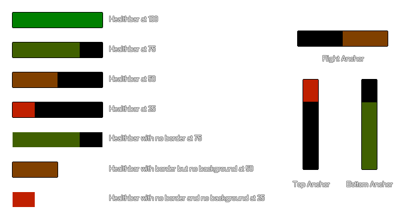

draw_healthbar(x1, y1, x2, y2, amount, backcol, mincol, maxcol, direction, showback, showborder);
| Streit | Beschreibung |
|---|---|
| x1 | Die X-Koordinate der linken Seite der Gesundheitsbalken |
| y1 | Die y-Koordinate des oberen Bereichs der Gesundheitsbalken |
| x2 | Die x-Koordinate der rechten der Gesundheitsbalken |
| y2 | Die y-Koordinate des unteren Bereichs der Gesundheitsbalken |
| amount | Die Variable, die die Gesamtgesundheit definiert (zwischen 0 und 100) |
| backcol | Die Farbe des Hintergrunds für die Leiste |
| mincol | Die Farbe der Bar, wenn keine Gesundheit (0) |
| maxcol | Die Farbe der Bar bei voller Gesundheit (100) |
| direction | Wo der Balken "verankert" ist (0 = links, 1 = rechts, 2 = oben, 3 = unten) |
| showback | Ob der Hintergrund der Leiste gezeichnet wird ( true ) oder nicht ( false ). Wenn false, wird das Argument backcol ignoriert. |
| showborder | Ob die Elemente des Balkens einen 1px breiten schwarzen Rand haben ( true ) oder nicht ( false ). |
Rückkehr: N / A
Mit dieser Funktion können Sie einen farbigen Balken zeichnen, um einen konstanten Wert anzuzeigen. Obwohl die Funktion das Wort "healthbar" verwendet, können Sie damit beliebig viele Informationen anzeigen, solange der anzuzeigende Betrag ein Prozentwert zwischen 0 und 100 ist (ein Prozentwert eines beliebigen Werts kann mit der Formel (CURRENT_Value / MAXIMUM_value) berechnet werden ) * 100 ), also können Sie zum Beispiel Energie, Gesundheit, Mana, Zeit oder irgendetwas anderes anzeigen, das von einer Balkenanzeige profitieren würde.
Sie können verschiedene Dinge einstellen, die den visuellen Aspekt des Balkens verändern. Diese sind im Bild unten dargestellt (beachten Sie, dass die hier verwendeten Farben) c_green für den Maximalwert und c_red für den Mindestwert, aber Sie können die Farben verwenden, die Sie wünschen): 
var pc;
pc = (hp / max_hp) * 100;
draw_healthbar(100, 100, 500, 200, pc, c_black, c_red, c_lime, 0,
true, true)
Der obige Code verwendet den Prozentwert, den Sie von den Variablen "hp" und "hp_max" erhalten, um eine standardmäßige rot / grüne Gesundheitsbalken zu zeichnen.